MTF公益机场 · 静态 UI 改版 · 2026-09-26
互助共享 公益同行
直接用浏览器打开本文件即可离线浏览，无需服务器。所有邮箱、IP、邀请码与用量均为虚构示例，按钮只在本地切换状态，不连接生产 API。页面右上角可切换朱红 / 藏青配色，打开接口标注可看到每个按钮对应的后端接口。
壹
登录不需要邀请码；注册页包含 Telegram 申请邀请码的完整步骤。
贰
手机底部标签栏直达：首页、每日签到、带宽看板、Telegram 绑定；其余在「更多」抽屉里。
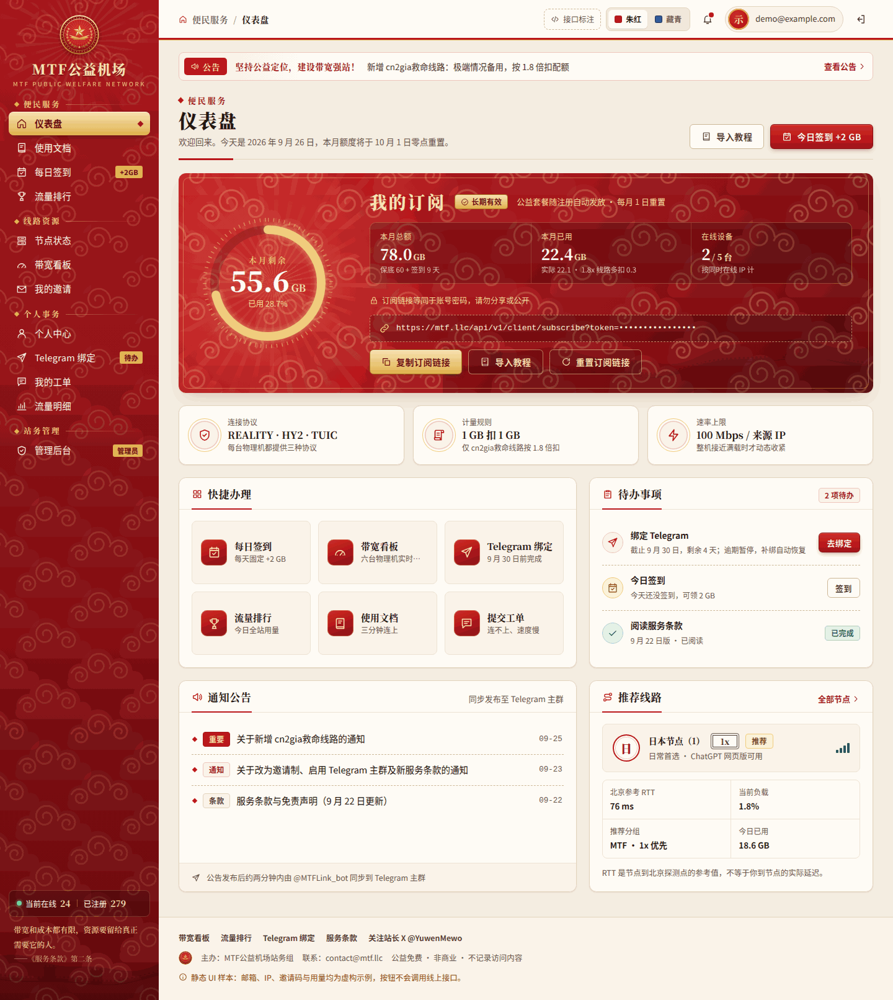
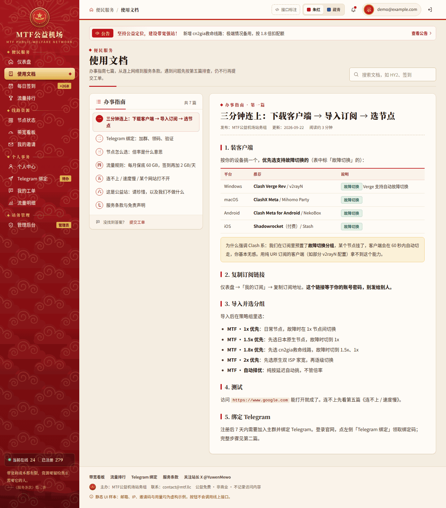
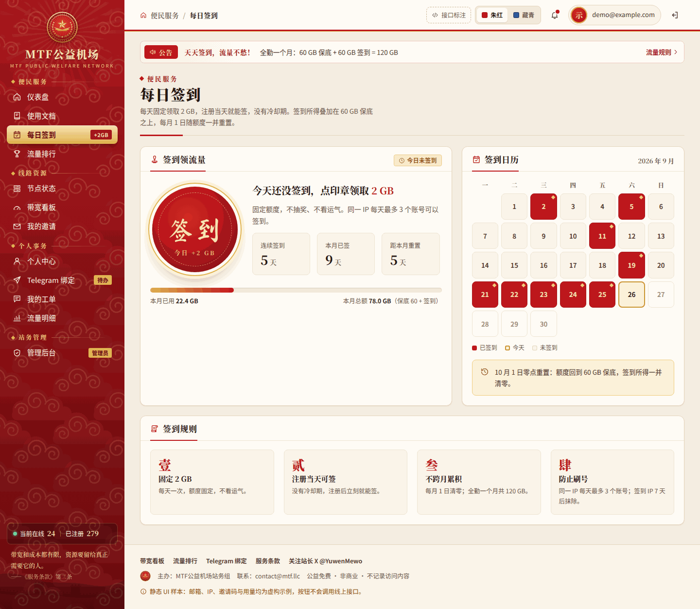
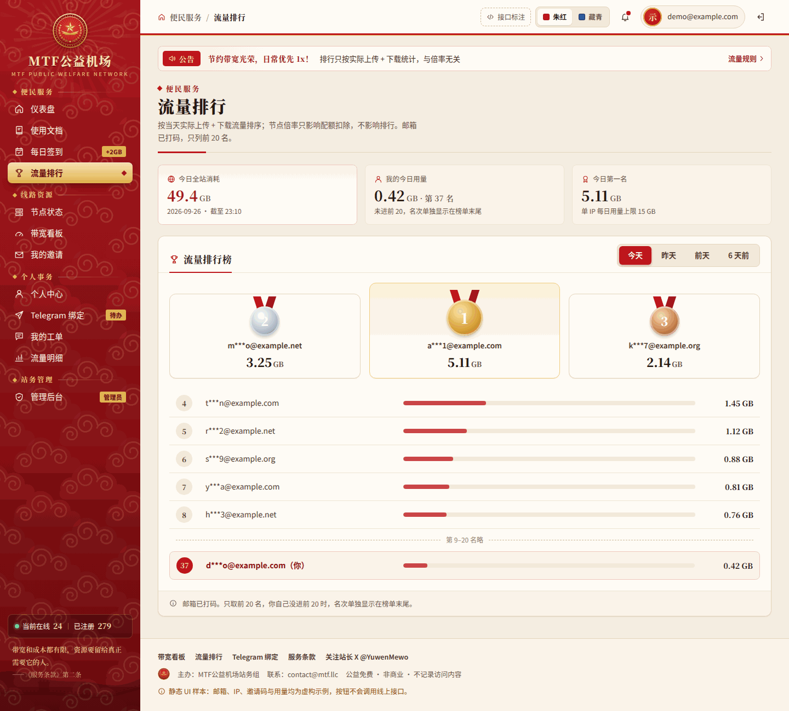
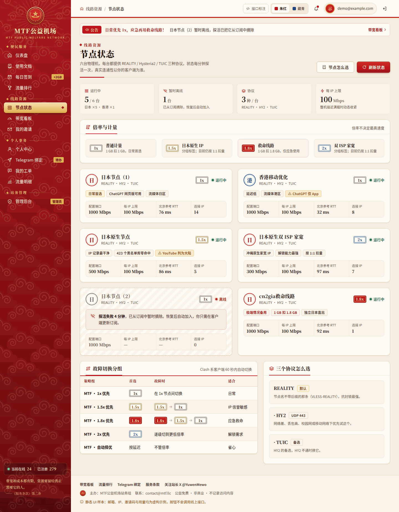
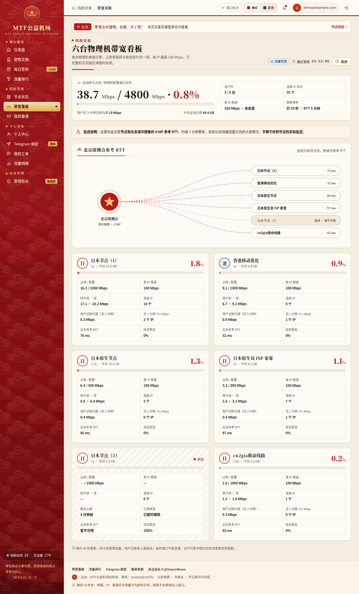
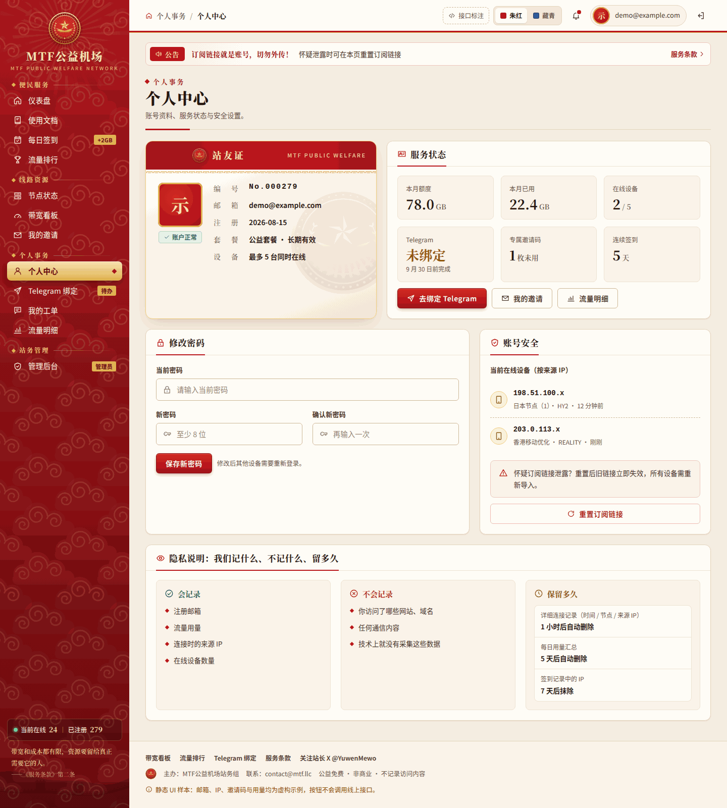
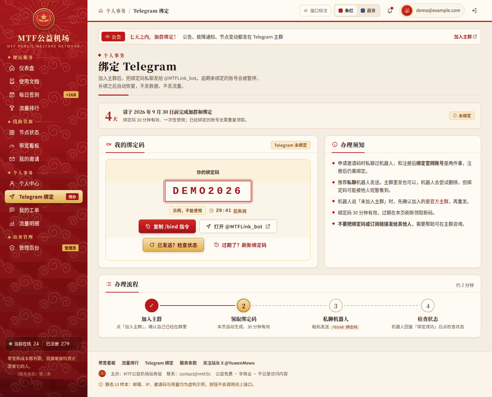
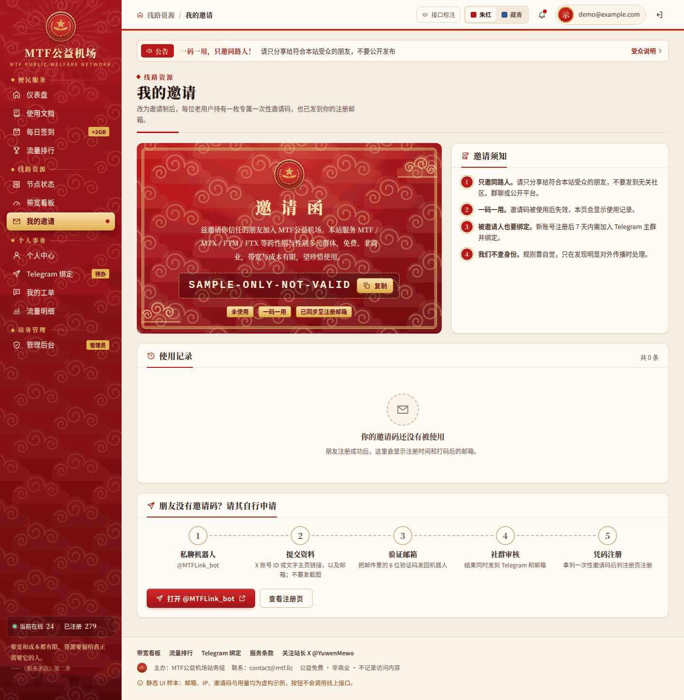
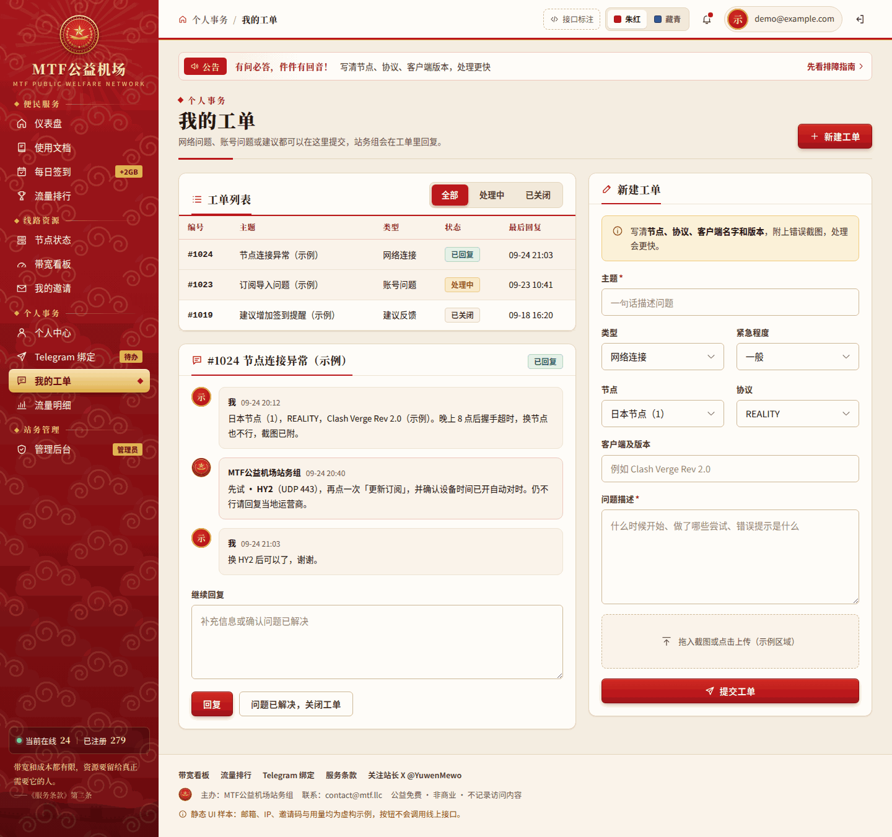
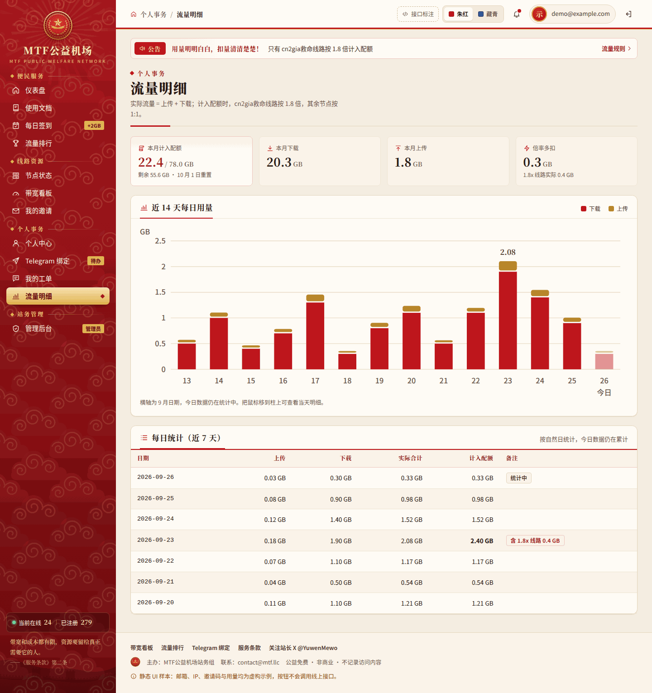
叁
数据按物理机汇总：REALITY / HY2 / TUIC 不算三台服务器。
肆
位于仓库 docs/ 目录。